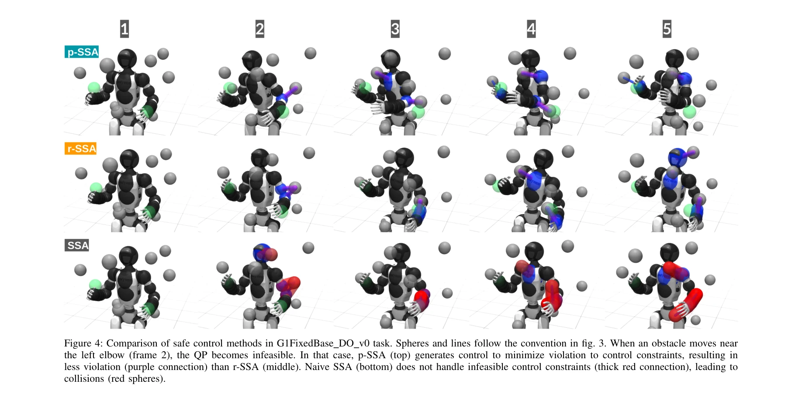
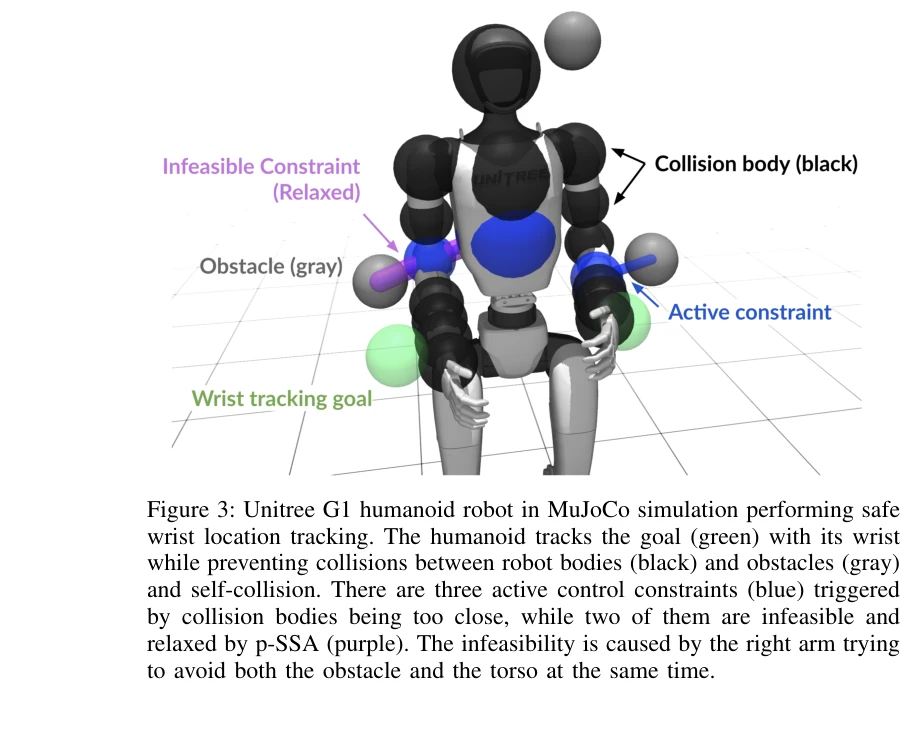

Essence

Figure 1: Application of dexterous safe control for humanoids in cluttered environments. (a) A safe teleoperation task w
인간형 로봇이 복잡한 환경에서 다중 충돌 회피를 수행할 때 발생하는 제어 제약의 불가능성 문제를 해결하기 위해 Projected Safe Set Algorithm (p-SSA)을 제안한다.
저자: Rui Chen, Yifan Sun, Changliu Liu | 날짜: 2025-02-05 | URL: https://arxiv.org/abs/2502.02858
Figure 1: Application of dexterous safe control for humanoids in cluttered environments. (a) A safe teleoperation task w
인간형 로봇이 복잡한 환경에서 다중 충돌 회피를 수행할 때 발생하는 제어 제약의 불가능성 문제를 해결하기 위해 Projected Safe Set Algorithm (p-SSA)을 제안한다.

Figure 4: Comparison of safe control methods in G1FixedBase DO v0 task. Spheres and lines follow the convention in fig.

Figure 3: Unitree G1 humanoid robot in MuJoCo simulation performing safe
총평: 밀집된 환경에서 인간형 로봇의 섬세한 다중 충돌 회피라는 현실적이고 중요한 문제를 처음 체계적으로 다루었으며, p-SSA 알고리즘은 실제 로봇 배포에 즉시 활용 가능한 실용적 해결책을 제시한다. 이론적 보장은 제한적이지만 광범위한 실증 검증과 무매개변수 일반화 능력이 인간형 로봇 안전 제어의 중요한 진전을 보여준다.